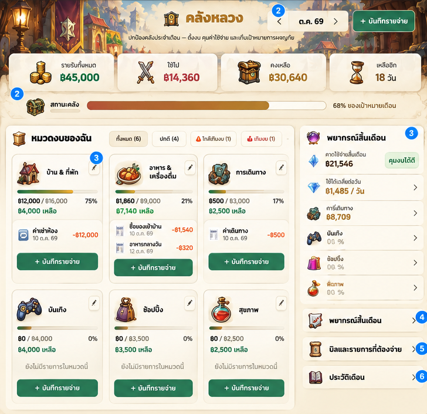
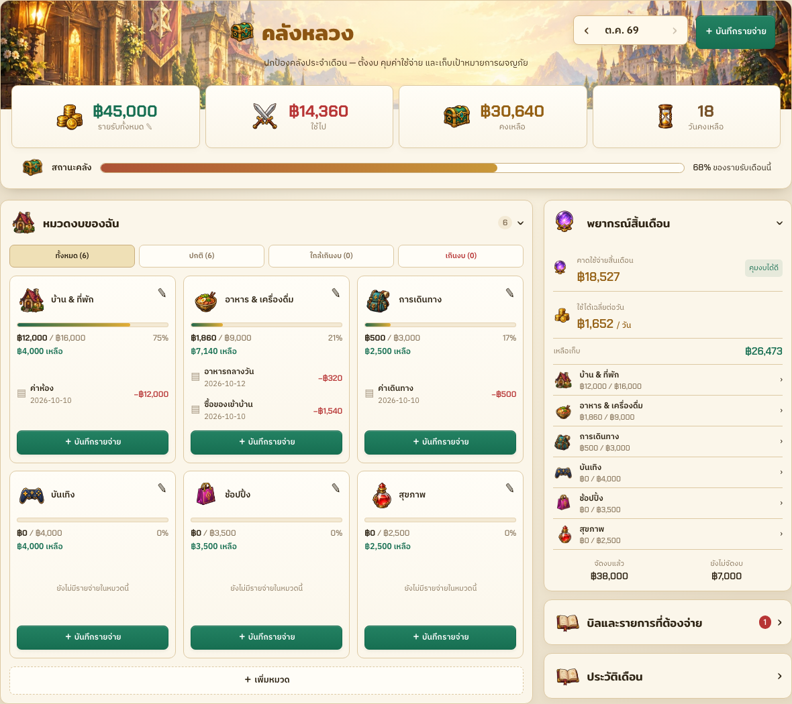
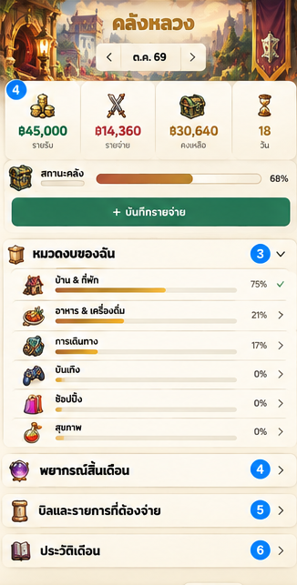
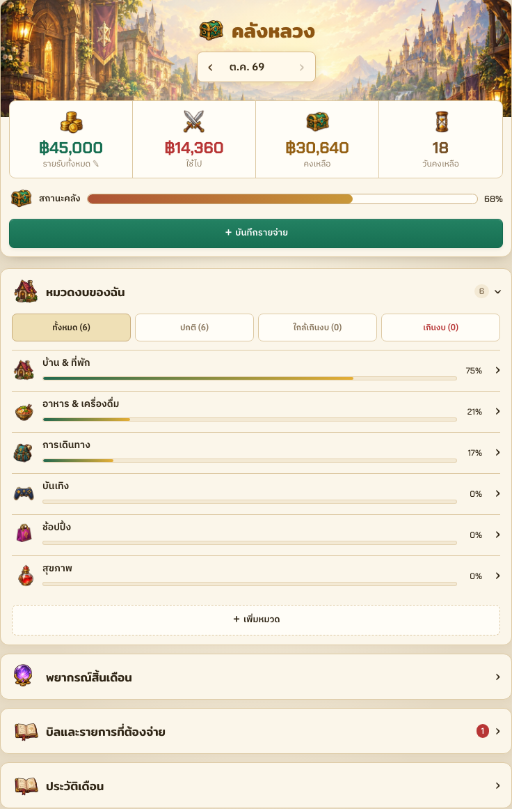
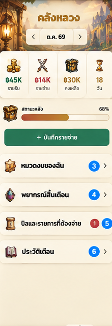
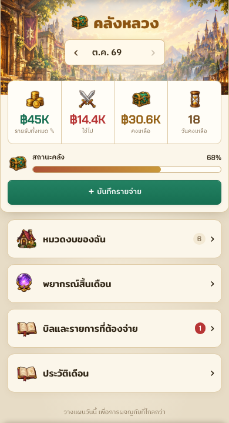

Treasury — reference → working product
Local development, synthetic data, 13 October 2026. Game-only crops omit annotations, device frames and shared navigation. Each pair uses equal display width with aspect ratios preserved; reference CSS scale is inferred. Forecasts and counts reflect real logic rather than decorative sample values.
Desktop · 1440px
Reference game area
Implementation
Tablet · 768px
Reference game area
Implementation
Mobile · 390px
Reference game area
Implementation
Full contextual captures: desktop · tablet · mobile · expense form · dark / English.